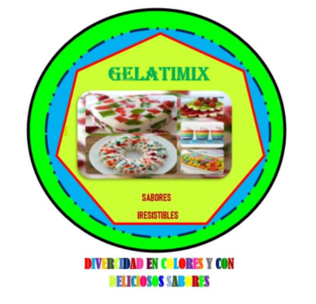

ven y prueba nuestros productos te van a encantar

hablaremos acerca de cómo estamos emprendiendo una Empresa dedicada la producción y venta de gelatinas llamada "GELATIMIX", primeramente, planee que negocio emprendiera siguiendo varios pasos, después llegue a la conclusión de elegir hacer un producto, que en este caso es un negocio de gelatinas, después nos vimos en la necesidad de asignarle un nombre, mientras lleve a cabo la planeación me di cuenta de lo interesante que puede ser emprender cualquier negocio. A mí me atrajo la idea de una Gelatinería, ya que es un producto que es muy consumido por chicos y grandes. emplee un logo para atraer la atención del mercado.
la elaboración la producción y la comercialización de postres de gelatina que satisfacen las necesidades de nuestros clientes, a través de un producto saludable, su excelente calidad y sabor con estándares de calidad en nuestros productos y una atención personalizada.
En el 2022 seré reconocido como empresa líder en la comercialización y producción de postres de gelatina en el retiro para estar presentes con nuestros productos en el mercado y para suministrar a los consumidores productos dulces con una excelente calidad precio brindándoles un momento de optimo agrado.
Deligencia los datos